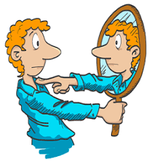

La Identidad
¿Qué es La Identidad?
Circunstancia de ser una persona o cosa en concreto y no otra, determinada por un conjunto de rasgos o características que la Diferencian de otras.y/ó
Conjunto de rasgos o características de una persona que permite distinguirla de otras en un conjunto. También hace referencia a la información
o los datos que identifican Y distinguen oficialmente a una persona de otra.

La Identidad Personal
La identidad personal es el conjunto de características propias De una persona y la concepción que tiene de sí mismo en relación al resto de personas.La identidad personal es individual, dinámica Y abarca diferentes dimensiones del colectivo.

La identidad personal permite por un lado la individualización o diferenciarse del resto de personas y por
otro ofrece la posibilidad de pertenecía a un grupo o colectivo.
La Identidad Cultural

La identidad cultural son las características propias de la Cultura de un grupo que permite a los individuos
como Miembros de un grupo y también diferenciarse del resto. Está compuesta por múltiples elementos como las Tradiciones,
los valores y las creencias características de una Determinada cultura.
La Identidad de Género

La identidad de género es el concepto que se tiene de uno mismo como ser sexual y de los sentimientos que esto conlleva;
se relaciona con cómo vivimos y sentimos nuestro cuerpo desde la experiencia personal y cómo lo llevamos al ámbito público,
es decir, con el resto de las personas. La identidad de género es cómo las personas se sienten en su interior y cómo expresan
su género a través de la manera de vestir, de comportarse y de su apariencia personal. Es un sentimiento que comienza a temprana edad en la vida.
Si bien existe una diversidad de identidades de género, habitualmente se considera un espectro con dos extremos:
la identidad atribuida a las mujeres y la relacionada con los hombres. Sin embargo, debemos recordar que la identidad de género:
- Es independiente de la orientación sexual e incluye las formas
en las que una persona se autodenomina y presenta frente a las demás.
- Incluye la libertad de modificar la apariencia o la función corporal a través
de roles sociales de género, técnicas médicas, quirúrgicas o de otra índole.